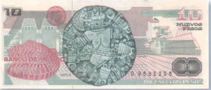

Тайны бумажных денег : Расчлененная богиня

На мексиканской боне в 10 новых песо 1992 г. имеется рисунок жертвенного камня в виде диска, найденного при раскопках Великого храма в Теночтитлане (сегодня Мехико) (рис. 29).

Диаметр этого почти круглого по форме рельефа (хранится в музее Темпло Майор, в Мехико) составляет 3,3 м. Когда жертвенник был откопан, а его великолепно сохранившийся рисунок очищен от земли, археологи содрогнулись. Ибо перед ними лежало расчлененное женское тело. Изображение на камне было настолько реалистичным, что некоторым из помогавших в раскопках студентам стало плохо. На рельефе хорошо видны места, где голова, руки и ноги самым варварским способом отделены от корпуса. Но когда ученые повнимательнее присмотрелись к артефакту, то выяснилось, что и изображенная на нем жертва не была лишена склонности к извращениям. У пояса расчлененной приторочен человеческий череп, а на отрубленных руках и ногах видны браслеты из живых змей. И тогда историки вспомнили старинную легенду о богине луны Койольшауки (испанское Coyolxauhqui). Ее имя переводится как «Золотые колокольчики». Койольшауки была, как сказали бы сегодня, ведьмой. Она отличалась скверным нравом, строила другим богам козни, варила чудотворные зелья. А однажды даже задумала убить собственную мать — богиню Коатликуэ. Но в тот самый момент, когда подговоренные ею братья набросились на Коатликуэ, из чрева богини выскочил их младший, уже полностью сформировавшийся и облаченный в доспехи брат Уицилопочтли — бог солнца и войны. Он убил сестру Койольшауки, а братьев прогнал. Пылающим змеем Шиукоатлем он отрубил Койольшауки голову, а тело расчленил. Голову сестры он забросил на небо, и она превратилась в луну, а изувеченное тело сбросил к подножию храма Коатепек. Отсюда у ацтеков и появилась традиция во время человеческих жертвоприношений сбрасывать трупы вниз на ступени пирамид.
До нас не дошло ни одного изображения бога войны Уицилопочтли. Но из испанских хроник известно, что таковые имелись. Только вот они делались обычно из теста и семян. Видимо, поэтому ни одно из них не сохранилось. Но зато археологам удалось раскопать храм, посвященный этому божеству. Онто и запечатлен на заднем плане все той же купюры в 10 мексиканских песо. Пока это единственный ацтекский двойной храм, известный в Центральной Америке. Он находился в самом центре Теночтитлана и имел вид пирамиды с фасадом, обращенным на запад. На вершину пирамиды вела широкая лестница в два ряда. А на самом верху стояли два храма поменьше, один из которых посвящался Уицилопочтли, а второй — уже упомянутому ранее богу дождя и плодородия Тлалоку.